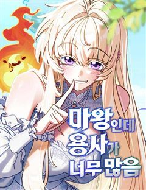
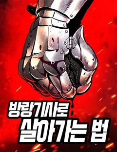
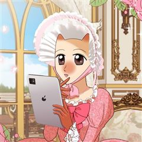
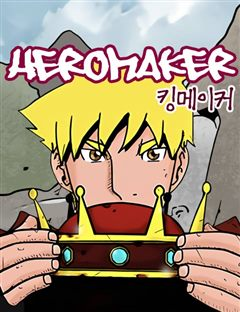

일상·개그 웃긴·병맛 웹툰 추천 TOP 30
일상·개그 작품 중에서 개그, 판타지개그, 4차원, 가벼운 같은 요소가 들어간 작품만 골랐어요. 네이버웹툰·카카오웹툰·레진코믹스에서 조건에 맞는 작품 106개 중 인기 순으로 30개를 골랐어요. 인기 TOP 3: 퀴퀴한 일기, 슬프게도 이게 내 인생, 극한견주 시즌2
2026-10-04 기준 · 성인 작품 제외
내 취향으로 더 좁혀서 추천받기 →-
1
 카카오웹툰
카카오웹툰퀴퀴한 일기
내 주변에 반드시 한 명은 있을 것만 같은, 어쩌면 나 같기도 한 그녀의 일기. 어느덧 40대의 아기 엄마가 된 주인공 이보람과 그의 군단들의 이야기이다. 너무나 시시하고 쩨쩨해서 누구에게 털어놓기도 멋쩍은 일들이 작은 마음을 가진 그들에겐 늘 뜨겁고 강렬하다! 마음속 깊이 숨어있는…
일상·개그개그공감카카오웹툰에서 보기 → -
2
 카카오웹툰
카카오웹툰슬프게도 이게 내 인생
"벌어먹고 살아야 하는 현생은 너무 힘들어!" 거친 현대사회에서 이리저리 치이며 어떻게든 적응해보려는 어리바리 슬이와 쉽지 않은 직장 생활에 약간 돌아버린 친구들의 슬프지만 즐겁게 살려고 노력하는 이야기
일상·개그개그공감카카오웹툰에서 보기 → -
3
 카카오웹툰
카카오웹툰극한견주 시즌2
약 먹기 싫어! 병원 가기 싫어! 내가 좋아하는 것만 하면서 살 거야! 9살 솜이, 어엿한 중년견이 되었으니 모든 게 순조로울 줄 알았다. B.U.T 우끼빡기도 안 하고, 미사일 발사도 안 하지만 어쩐지… 지능캐가 되어버렸다고나 할까? 그렇다고 물러날 수는 없다. 집사 10년차, 무엇…
일상·개그개그힐링카카오웹툰에서 보기 → -
4
 카카오웹툰
카카오웹툰반지하셋방
밝지만 엉뚱한 첫째와 무뚝뚝한 둘째, 인간 비타민 셋째까지. 청각장애인 어머니와 막노동꾼 아버지 밑에서 가난하게 자라났지만 밝고 유쾌하게 살아가는 세 자매. 그 세 자매 중 첫째와 둘째가 독립을 결심했다! 하지만 독립자금이 모자란 두 사람은 반지하에 자리를 잡는다. 천장에서 물이 새는…
일상·개그개그공감카카오웹툰에서 보기 → -
5
 네이버웹툰
네이버웹툰99강화나무몽둥이
약육강식이 진리인 가상 현실 게임 '크로노 라이프'. 허접이라며 무시만 당하던 '나'는 우연히 얻은 초보용 기본 무기 '나무 뭉둥이' 를 +99 강화까지 성공하게 되고, 본인을 무시하던 놈들을 찾아다니며 몽둥이로 무자비하게 패기 시작하는데..! 막장 스케일 사이다 액션 스타트!!
일상·개그개그병맛사이다게임네이버웹툰에서 보기 → -
6
 네이버웹툰
네이버웹툰육아일기
이젠 갠플이 아니라 팀플이다! 조별 과제와 차원이 다른 인생을 건 팀플이 시작된다. 1인가구에서 2인가구로 2인가구에서 3인 가구로 인생 난이도가 급격히 상승한 자까 작가의 일상 이야기
일상·개그가벼운컷툰공감결혼생활네이버웹툰에서 보기 → -
7

-
8
 카카오웹툰
카카오웹툰재활용 머학생
'쓰레기 머학생'이었던 수레기, 의대생이 되어 돌아왔다. 제멋대로 대학생활을 보내며 전공이었던 수학을 잔뜩 싫어했던 수레기는 졸업 후 수능을 다시 보고 의대에 합격한다. 늦은 나이에 다시 신입생이 되어 시작하는 두 번째 대학생활! 이번에는 이전처럼 심각한 아싸처럼 살지도, 공부도 던지…
일상·개그개그미스터리청춘카카오웹툰에서 보기 → -
9
 네이버웹툰
네이버웹툰윌유메리미
외모는 상남자, 마음은 감성소녀 윌.외모는 청순녀, 마음은 터프가이 메리! 서울 부산 띠동갑 커플의 리얼 연애 일기
일상·개그개그가벼운공감결혼생활네이버웹툰에서 보기 → -
10
 네이버웹툰
네이버웹툰원주민 공포만화
끝날 때까지 끝난 것이 아니다! 마지막까지 방심할 수 없는 다양한 에피소드. 당신의 상상을 뛰어넘는 본격 반전 공포 스릴러가 온다!
일상·개그개그4차원병맛오컬트판타지네이버웹툰에서 보기 → -
11
 네이버웹툰
네이버웹툰악당들의 후원자가 되었다
좋소 노예인 내가 게임 속 귀족으로 빙의되었다. 근데 미래의 악당들에게 죽는 엑스트라라고? 이들을 교화시켜 어떻게든 귀족 생활을 누리고 말 테다! 아직 어린 악당들의 흑화를 막기 위해 후원했고, 어려운 환경을 극복하게 만들어줬다. 그 결과 뿌듯함이 느껴질 만큼 모두 훌륭하고 평범하게…
일상·개그판타지개그액션판타지게임마법네이버웹툰에서 보기 → -
12
 네이버웹툰
네이버웹툰풍작이에요, 마왕님!
게임 속 최종보스 마왕이 되었다. 그런데... 이대로 인간계를 침공하면? 내가 키운 만렙 주인공에게 사망. 그렇다고 침공을 중단하면? 굶주린 수하 마족 사천왕에게 사망. ...그러므로, 답은 농사다.
일상·개그판타지개그농사세계관게임판타지네이버웹툰에서 보기 → -
13
 네이버웹툰
네이버웹툰대학원 탈출일지
연구에 꿈을 가지고 대학원을 선택한 병아리 요다. 예상과는 다르게 연구에 관심 없는 교수님과 똥군기의 연구실 분위기에 당황한다. 요다는 과연 무사히 대학원을 탈출할 수 있을 것인가?!
일상·개그하이퍼리얼리즘컷툰네이버웹툰에서 보기 → -
14
 네이버웹툰
네이버웹툰좋아하면 멍청해진다
차갑고 시크한 철벽녀 세린과 평범한 대학생 진형. 남들 앞에선 멀쩡한 두 사람이지만 함께 있으면 바보가 된다.
일상·개그개그가벼운러브코미디일상개그힐링네이버웹툰에서 보기 → -
15

-
16

네이버웹툰마왕인데 용사가 너무 많음
'마왕의 정석'을 착실히 따르다가 용사들에게 죽었다. 나와 내 탑이 용사 맞춤형 사냥터라고? 회귀로 다시 얻은 삶의 기회, X같은 마왕의 정석따윈 오크나 주라지! 꼴통(?) 마왕 베르제의 마왕으로 살아남기!
일상·개그판타지개그액션판타지소년물회귀네이버웹툰에서 보기 → -
17
 네이버웹툰
네이버웹툰약 파는 황태자
내가 황태자라고? 소설 속 병약요절한 그 황태자? 그런데 나, 한의사인데? 어쩔 수 없다. 체질개선, 원기회복, 자양강장, 활력증진까지. 이제부터 내 몸은 내가 챙긴다.
일상·개그개그판타지개그4차원서양네이버웹툰에서 보기 → -
18
 네이버웹툰
네이버웹툰아마도 무적불패
험악한 겉모습 때문에 '사파의 별'이라 불리던 삼류 무사 유혈. 헛소문 때문에 억울한 나날을 보내던 중 과거, 미래를 약속했던 여인 설화가 진짜배기 고수가 되어 그의 앞에 나타난다. 설화를 시작으로 수많은 무림인들과 엮이며 악명은 점점 커져만 가고 이윽고 무림맹과 마교, 심지어는 황실…
일상·개그판타지개그하렘러브코미디네이버웹툰에서 보기 → -
19
 네이버웹툰
네이버웹툰어린이집 다니는 구나
"노는 게 제일 좋아!" 라고 했더니 정말 노는 게 직업이 됐다?! 매일 동심의 세계로 출퇴근한지 어쩌다 10년째! 아이들이라면 알 만큼 안다고 생각했는데... 예측불가한 말과 행동들은 여전히 새롭기만 하다. 그런 아이들에게 언제나 "그랬구나" 라고 말해주는, 10년차 프로공감러 구나…
일상·개그하이퍼리얼리즘컷툰공감무해한네이버웹툰에서 보기 → -
20
 네이버웹툰
네이버웹툰짜장 한 그릇에 제갈세가 데릴사위
짜장면 한 그릇으로 전 무림을 평정할 수 있을 것 같다? 최고의 중식 요리사를 꿈꿨지만 중국 송나라 시대로 보내져버린 주인공! 하지만 깨어난 몸에 무공은 전혀 없고, 남은 거라곤 전생에서 익힌 요리 기술들뿐. 그런데 이 요리들... 반응이 매우 좋다! 이번 생에는 과연 짜장면으로 중원…
일상·개그개그가벼운병맛하렘네이버웹툰에서 보기 → -
21
 네이버웹툰
네이버웹툰솔플의 제왕
2035년 가상현실게임 워로드의 등장은 세상을 바꾸었다. 그 세상에서 자신의 운명도 바꾸고 싶었던 안재현. 하지만 인생을 바꾸기 위해 일생을 게임에 바친 대가는 믿었던 동료들의 배신, 그 배신으로 모든 걸 잃은 안재현, 그런 그에게 온 재도전의 기회! "다시는 남이랑 같이 게임 안 해…
일상·개그판타지개그레드아이스 스튜디오사이다현대판타지네이버웹툰에서 보기 → -
22
 레진코믹스
레진코믹스부랄친구
낭랑 18세의 지은은 길건너 옆집에 사는 민철과 10년도 더 된 부랄친구다. 남녀사이에 친구는 없다지만 꾸준히 둘은 친구임을 주장하고 있기를 10여년.. 하지만 아침에 함께 등교, 하교도 같이, 아프면 병문안, 놀러갈 때도 단둘이.. 이런 둘이 정말 단순한 친구 사이로 남을 수 있을까…
일상·개그개그학원물러브코미디소꿉친구레진코믹스에서 보기 → -
23
 네이버웹툰
네이버웹툰공동급식구역
강자가 모든 것을 지배하는 수작고등학교. 전학생 이사나는 공평하지 않은 점심급식에 분노한다. 비분함을 감출 수 없다면 이미 싸움은 시작된 것. 달려 사나!
일상·개그개그4차원병맛사이다네이버웹툰에서 보기 → -
24
 네이버웹툰
네이버웹툰고덕춘의 푸드트럭
돌아가신 덕춘 삼촌의 푸드트럭을 물려받은 준호. ‘고덕춘’의 이름을 전국에 알리기 위해 여행하며 요리한다. 재벌 2세 세희를 시작으로, 각 지역의 사연 있는 여자들과 얽히게 되는 준호! 모두 그에게 마음을 빼앗기지만, 정작 준호의 마음을 빼앗은 건 요리뿐! 마성의 남자 준호가 펼치는…
일상·개그개그가벼운병맛하렘네이버웹툰에서 보기 → -
25

네이버웹툰방랑기사로 살아가는 법
불의의 사고로 사망 후 에이츠 가문의 요한 에이츠로 환생한 김요한. 귀족으로 태어났으나 요한 에이츠는 가문 내 서열 꼴찌. 설상가상으로 이 세계는 무자비한 중세다. "믿을 수 있는 건 오직 자기 자신뿐." 약육강식인 이 세계에서 살아남으려면 돈과 힘이 필요하다! 현대인 시절의 지식을…
일상·개그판타지개그레드아이스 스튜디오사이다중세판타지액션네이버웹툰에서 보기 → -
26
 네이버웹툰
네이버웹툰청춘정식
매일 맛있는 끼니를 제공해야'만' 하는 게스트하우스. 그곳을 갑작스럽게 혼자 운영해야 하는 대학생 하리. 그러나 하리가 유일하게 못하는 건 요리?! 주방 직원 지원자는 0..; 난감하던 찰나에 수상한 지원자가 왔다! <헤어지면 죽음> 봄소희 X KYMA 작가의 로코 신작!
일상·개그가벼운러브코미디일상개그힐링리얼로맨스네이버웹툰에서 보기 → -
27
 네이버웹툰
네이버웹툰호붕빵 아저씨
귀여운 디저트를 판매하고 싶은 꿈을 가진 호랑이, 맹호석. 한때는 무서운 조직의 일원이었지만, 손을 씻고 시작한 건… 다름 아닌 붕어빵 장사! 하지만 새 삶도 결코 순탄하지 않은데… 선입견과 편견이 가득한 시선 속에서, 호석은 과연 동네 주민들과 잘 어울리고, 디저트 판매의 꿈을 이룰…
일상·개그가벼운일상개그힐링감성적인공감네이버웹툰에서 보기 → -
28
 네이버웹툰
네이버웹툰냥냥찍찍!
햄스터로 변하는 여자 금해미, 고양이로 변하는 남자 고우영. 저주를 풀기 위해선 스킨십을 해야 한다?! 고양이와 햄스터의 아찔한 코믹 풀충전 캠퍼스 로맨스!
일상·개그개그가벼운컷툰러브코미디네이버웹툰에서 보기 → -
29

카카오웹툰웹툰 작가가 리뷰어로 빙의한 건에 대해
웹툰을 리뷰하는 웹툰 작가가 있다?! 웹툰은 많은데 뭘 볼지 몰라 고민되는 분들은 여기 주목! 카카오페이지의 재밌는 작품들을 빨루가 리뷰해드립니다. 빨루의 리뷰 웹툰으로 당신만의 취향저격 웹툰을 찾아보세요!
일상·개그개그카카오웹툰에서 보기 → -
30

네이버웹툰히어로메이커
왕은 영웅이 되고 싶어하는 공주의 소원을 들어주기로 전격 결심! 공주를 속이고 마치 영웅이 된 것처럼 만들기 위해 온 나라가 연극을 하게 되는데..파란만장한 그들만의 눈물겨운 영웅만들기의 대장정이 펼쳐집니다~
일상·개그개그판타지개그서양모험네이버웹툰에서 보기 →